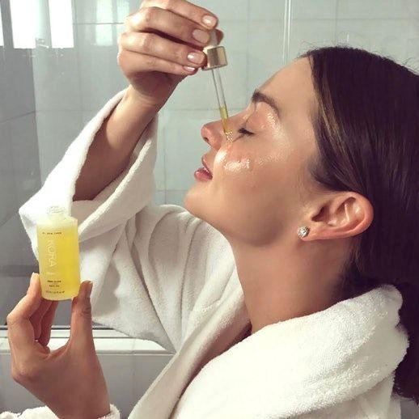

Se asocia con las rutinas que seguimos y los productos que usamos para que la piel de nuestro rostro luzca fresca y sana.
A continuacion vamos a mostrar el paso a paso, en que orden van los productos de una rutina de Skincare.
Esto es importante para que se pueda potencializar y tener la maxima efectividad del Skincare.
- Independientemente tengas la piel seca, grasa o mixta los pasos y el orden son los mismos.
RUTINA DE NOCHE
- DESMAQUILLANTE
- 1ro retiramos el maquillaje con AGUA MICELAR con un algodon
- Luego lavamos el rostro con JABON para el rostro, en lo posible Soap free para no desbalancear el PH
- TONICO
- En el caso de no tener un jabon Soap free usaremos el TONICO
- Este producto va a balancear tu PH , logrando que vuelva la acidez de la piel
- Lo aplicas a toques en tu rostro
- SUERO
- El suero es una parte importante en la rutina
- Va ayudar a tu piel, contiene ingredientes activos
- El suero va a penetrar muy bien en las capas de la piel muy profundas
- Beneficios:
- Anti oxidante
- Hidrata
- Disminuie el acne
- Y muchos beneficios mas, gracias a sus ingredientes ACTIVOS
- Se aplica solamente con unas gotitas en el rostro
- CREMA HIDRATANTE
- Por ultimo y no menos importante la CREMA HIDRATANTE
- Esta va a humectar y sellar la hidratación de los productos anteriores
